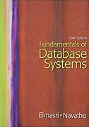
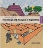
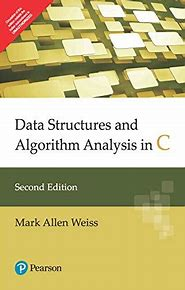
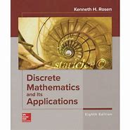
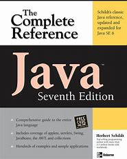

BOOKS LISTS
| Book name | Accession Number | Author name | Book front view | Description | No.of Books Available | Price Of The Books |
|---|---|---|---|---|---|---|
| Fundamental Applied Probability And Random Process | |
Oliver C.ibe |  |
The long-awaited revision of Fundamentals of Applied Probability and Random Processes expands on the central components that made the first edition a classic. The title is based on the premise that engineers use probability as a modeling tool, and that probability can be applied to the solution of engineering problems. | |
|
| Computer Organization And Design | |
D.A Patterson
J.L.Hennessy |
detailed information about the changing world of technology and the latest updates with relation to factors like a switch from uniprocessor to multicore microprocessors. It analyses the advancements that have taken place with this parallelism and also provides some historical perspectives. | |||
| Fundamental Of Database System | Ramez Elmasri S.B.navathe |
 | Fundamentals of Database Systems combines clear explanations of theory and design, broad coverage of models and real systems, and excellent examples with up-to-date introductions to modern database technologies. This edition is completely revised and updated, and reflects the latest trends in technological and application development. | |
||
| Introduction To Design And Analysis Of Algorithms | Anany Levitin |  | Valued by students and trusted by instructors, Introduction to the Design and Analysis of Algorithms employs a comprehensive taxonomy of algorithm design techniques that is more powerful and intuitive than the traditional approach. It provides a coherent and pedagogically sound framework for learning and teaching algorithms. | |||
| Operating System Concepts | abraham S, Peter B.G, Greg Gagne |
An Operating System (OS) is an interface between a computer user and computer hardware. An operating system is a software which performs all the basic tasks like file management, memory management, process management, handling input and output, and controlling peripheral devices such as disk drives and printers. | |
|||
| Softeare Enineering A Pratitioner's Approch | Roger S.Pressman | Presents an engineering approach for the analysis, design, and testing of web applications. This Software Engineering: A Practitioner’s Approach, 9th Edition book provides information on software tools, specific work flow for specific kinds of projects, and information on various topics. | ||||
| Data Structures And Algorithm In C | |
mark allem weiss |  | This book is especially designed for beginners, explains all basics and concepts about data structure. Source code of all data structures are given in C language. Important data structures like Stack, Queue, Linked List, Tree and Graph are well explained. Solved example, frequently asked in the examinations are given which will serve as a useful reference source. | ||
| Discrete Mathematics and its application | Rosen, K.H |  | Discrete Mathematics And Its Applications (SIE) is a study of mathematical structures that are fundamentally discrete rather than continuous. Discrete objects can often be enumerated by integers, and more formally, deal with countable sets. | |||
| Java the Complete Reference | Herbet Schildt |  | The Complete Reference is a comprehensive book for undergraduate students of Computer Science Engineering. The book comprises of chapters on the Java language, the Java library, GUI programming with Swing, GUI programming with JavaFX and applying Java | |||
| Principle of Communication System | H Taub,G Saha | Principles of Communication Systems (SIE): 4th Edition Taubs Principles of Communication Systems, 4e is a comprehensive discourse on the fundamentals of analog and digital communication techniques. for years, the book has served the academic requirements of the communication engineers-both budding and practicing. in the revised edition, the focus has been to continue to serve the communication engineers by focusing on the latest trends, and modifying the content accordingly. |